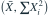
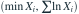
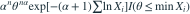

Pareto 密度为  ，两个参数均未知。由因子分解可直接得到哪组充分统计量？
，两个参数均未知。由因子分解可直接得到哪组充分统计量？
，两个参数均未知。由因子分解可直接得到哪组充分统计量？- A

- B
- C
 单独即可
单独即可 - D

我已思考，展开答案与解析
正确答案：D
- 联合密度的参数部分可写为

。 - 因此对数和与样本最小值联合保留全部参数信息。
易错提醒只留对数和会丢失关于未知下端点的支持集信息。
JYSG · 432精选 · 册内复旦大学432·2026年·九(2)；PDF第43页（印刷页41）
原大题拆解